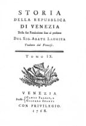

sito di propriet� della Associazione Culturale Zivido
webmaster pierino@snet.it
La Battaglia sui libri |
| Abate
Lauger Storia della repubblica di Venezia dalla sua Fondazione fino al presente del Sig. Abate Lauger. Tradotta dal francese. Venezia, presso Carlo Palese e Gasparo Storti, con privilegio, 1768  |
Storia Veneta, Libro
XXXIII, pagine da 28 a 47 (Anno 1515, Leonardo Loredano, Doge LXXV.) Principi, e gran numero di Signori del primo rango, formavano quefta armata affai bella. Pietro Navarro comandava fei mille Guafconi; era quefti quel celebre Generale Spagnuolo, che li Francefi avevano prefo nella battaglia di Ravenna; i fuoi rivali l'avevano fupplantato nella Corte di Spagna, a fegno che ferdinando avealo abbandonato, fenza volere rifcattarlo. Quefto difprezzo, che facevafi di fua perfona, lo aveva determinato a rinunziare a tutti li fuoi beni ricevuti dal Re, per paffare al fervizio del Francia. L'armata Veneziana condotta dall'Alviano, compofta di dodici mille fanti e di tre mille cavalli, accampava a Lodi, e poteva facilmente unirfi all'armata Francefe; quefte due armate erano intermediarie tra gli Svizzeri, che s'erano tutti raccolti fotto il cannone di Milano, ed il Vicer� di Napoli, che fi era unito a Lorenzo de' Medici preffo Piacenza, di modo che l'unione di quefti con quelli non potevafi pi� efeguire. Le incertezze degli Svizzeri, e il loro maneggio col Re avevano caufato quefte diverfe pofizioni de' Confederati. Il Vicer� e Lorenzo de' Medici avendo intefo, che gli Svizzeri erano per accomodarfi col Re, fi credettero obbligati di evitare le infidie di quefta nazione infedele, e di avvicinarfi tra loro, affine di avere un ritiro ficuro, in cafo che foffero a ci� sforzati dalla fuperiorit� delli Francesi. Quefta difpofizione aveva lafciato il campo libero al Generale Veneziano, che ponendofi a portata di unirfi all'armata Francefe, aveva adempito l'oggetto, al quale importava affaiffimo alli Confederati di porre oftacolo. (Gli Svizzeri fi accordano a non dare battaglia; il Cardinale di Sion li fa rifolvere a darla) In un Consiglio di guerra tenuto a Milano, molti Generali Svizzeri informati delle difpofizioni fatte dal Re per ricevere la battaglia, fe gli veniffe prefentata, furono di opinione di non arrifchiarvifi; foftennero, ch'era temerit� l'attaccare un nemico potente, che aveva avuto il tempo di fcegliere le fue pofizioni, e di cui le truppe numerofe animate dalla prefenza del loro Re moftravano un vivo defiderio di combattere, ed avevano nella loro formidabile artiglieria tutti gli ajuti per vincere; che correva voce, che l'armata Francefe doveva in breve muoverfi per avvicinarfi a quella di Venezia; che fognava afpettare, ch'ella aveffe decampato, e che allora l'occafione farebbe favorevole per attaccarla nella fua marcia. Ma il Cardinale di Sion temendo, che, differendofi la battaglia, fi impiegaffero di nuovo per corrompere gli Svizzeri quegli artifizj, che tanto affaticato avea per diftruggere, guadagn� molti Spioni, che vennero fucceffivamente a dare avvifo, che li Francefi disponevanfi a marciare verfo Lodi, e trov� allora tutti li Generali rifoluti a combattere, li quali ben tofto difpofero il loro ordine di battaglia. Mentre erano ful punto di avanzare la marcia, il Cardinale di Sion, temendo, che l'altiero contegno de' Francefi non li faceffe cambiare di volont�, fcoprendo il loro errore, repprefent� di aver faputo, che li Francefi avevano fofpefa la loro marcia; che con ragione fofpettavafi, che aveffero prefo quefto partito per il timore concepito dalla marcia, che facevano gli Svizzeri per attaccarli; che non credendofi in cafo di refiftere ad effi in campo aperto, avevano rifoluto di attenderli dietro le loro tricere. "Ma, aggiunfe, fe la fola nuova della voftra marcia ha caufato nel nemico tanto terrore per ritornarfene nel fuo campo, come fofterr� egli la prefenza e gli sforzi della voftra armata invincibile? La fua timidit� infiammi il voftro coraggio. L'efperienza vi ha fatto conofcere in Novara, che l'artiglieria non d� la vittoria, ma il valore del foldato. Se i noftri nemici foffero bravi, non opporrebbero altre trinciere che i loro corpi; ma che poffono effe per la falute di un'armata fenza coraggio? Il nemico, che fiete per combattere, non vi � ignoto. Chi fa meglio di voi il carattere de' francefi, popolo vile e fenza perizia nell'arte della guerra? Voi avete tante volte fervito con effi e contro effi, coficch� avete avute mille occafioni di reftare perfuafi, che n� in valore n� in efperienza poffono paragonarfi a voi. Cedendovi la campagna fi confeffano quafi vinti. Ricordatevi le voftre vittorie riportate contro la nazione Francefe, ed oggi vi troverete ricoperti di gloria". (Battaglia di Marignano) Il calore del fuo difcorfo s'infufe in tutti i cuori. Non fi riflett� di pi�, e fi marci�. Il Re all'avvifo ricevuto, che gli Svizzeri venivano per combattere, pofe in ordine tutta l'armata; licenzi� il Generale Veneziano, Alviano, ch'era venuti al campo per concertare con lui intorno le operazioni della campagna, e gli diffe di ritornare alla fua armata, e di condurgliela fubitamente. La vanguardia Francefe difefa da un foffo guarnito di fettantadue pezzi di cannone, era compofta di lanfcheneti, di Guafconi, e di un groffo corpo d'infanteria. Comandavala il Conteftabile di Borbone, avendo fotto di s� il Principe di Talmond, Figlio del Signor della Tremoille, il Marefciallo Trivulzio, e Pietro Navaro. Gli uomini d'armi ed il refto de' Lanfcheneti formavano indietro il corpo di battaglia che il Re comandava in perfona, avendo fotto s� li Duchi di Lorena e di Albania, il Marefciallo di Lautrec, Francefco di Borbone Conte di S.Paolo, e Lodovico de la Tremoille. La retroguardia era diretta dal Duca di Alenzon, e fervivano fotto di lui il Marefciallo di Chabannes, ed il Conte di Aubigny. Gli Svizzeri avanzavano in un folo corpo ferratiffimo, e sforzavano la loro marcia, come avevano fatto a Novara, col difegno di penetrare tra li Lanfcheneti, e d'impadronirfi dell'artiglieria; comparvero a vifta del campo li 13. Settembre verfo le ventidue ore. Si fece contro effi un orribile fcarico del cannone, che foftennero con la loro intrepidezza ordinaria. Una parte de' Lanfcheneti pafs� il foffo per attaccare gli Svizzeri, ma quefti gl'incalzarono talmente, che li ruppero, li sforzarono a ripaffare il foffo in difordine, lo paffarono con effi, e prefero quattro pezzi di cannone. Pietro navarro accorfe con le fue compagnie di Guafconi; il Conteftabile di Borbone fi un� a lui; il combattimento divenne furiofo, fenza poter far perdere agli Svizzeri un dito di terreno. Allora il Re fece avanzare i fuoi uomini d'armi con una parte del corpo di battaglia. Gli Svizzeri abbaffarono le loro picche, e tenendoli fempre unitiffimi, foftennero queft'affalto fenza muoverfi. Ma alfine gli uomini d'armi penetrarono ne' loro battaglioni; furono rotti, difperfi, e pofti in difordine: gli uni fi ritirarono di l� dal foffo, gli altri fi avventarono con furore contro gli fquadroni Francefi, meno penfando a falvare la vita, che a venderla a caro prezzo, e furono quafi tutti tagliati a pezzi. Il Re era in mezzo la mifchia, battendofi come un femplice foldato; ricev� molti colpi di picca e di alabarda, che non ebbero effetto per la tempera della fua armatura. Sopravvenne la notte, e continuava la ftrage; il combattimento diveniva confufo, fenza poterfi quafi conofcere. L'urto delle armi, le grida de' feriti e de' moribondi, l'orrore delle tenebre aumentavano lo fpavento e il tumulto. Un diftaccamento di Svizzeri, inviluppato dai Francefi, volendo farfi ftrada tra effi, grid� Francia, Francia; ma gli uomini d'armi, che difponevanfi a lafciarli paffare, accortifi dello ftratagemma, fi avventarono con furore contro quefto corpo nemico, e lo trucidarono. (La notte separ� i combattenti) Il combattimento cefs� al fine; le due armate paffarono il refto della notte mefchiate infieme, e non ne facendo, per cos� dire, che una fola. Il Re era reftato nella vanguardia, e non evit� l'eftremo pericolo, a cui erafi efposto, che facendo offervare intorno a s� un profondo filenzio, ed eftinguere tutti i fuochi. Gli Svizzeri ufarono anch'effi delle medefime cautele, non potendo n� gli uni n� gli altri arrifchiare verun movimento, fenza timore di cader tra le mani del nemico. Arrivato il giorno, le due armate fi ritirarono di concerto, per prepararfi a un nuovo combattimento (Il combattimento fi rinnova nel giorno feguente) Si offerv� d'ambe le parti il medefimo ordine di battaglia, che nel giorno precedente; gli Svizzeri fi prefentarono per attaccare la vanguardi Francefe, e per impadronirfi dell'artiglieria, da cui fi fecero contro effi fcariche cos� a propofito, che ogni colpo di cannone atterrava le file intiere di foldati. Effi inveftirono i Lanfcheneti con furia, e trovarono una refifetnza che non afpettavano; questo conflitto terribile dur� più ore. I Lanfcheneti foftenuti e rinforzati dagli uomini d'armi, fi batterono con furore, e fenza muoverfi. verfo le quindici ore gli Svizzeri, difperando di vincerli, fi fepararono in due corpi, di cui uno continu� l'attacco contro li Lanfcheneti, e l'altro, fatto un giro, travers� una palude, ed attacc� in fianco la retroguardia Francefe. Avevano già incominciato a porla in molto difordine, quando Alviano Generale de' Veneziani, al quale il Re aveva fpediti molti corrieri, arriv� opportuno alla tefta di duecento uomini d'armi, avendo lafciato ordine a tutta la fua armata di feguitarlo con follecitudine. Egli prefe in coda gli Svizzeri, ch'erano in azione contro la retroguardia de' Francefi; li gett� con furia in mezzo ai loro battaglioni, e li ruppe. Quefta brava gente attaccata cos� da due parti, foftenne ancora per qualche tempo il combattimento; e fu a tempo di unirfi e di ritirarfi dal campo di battaglia in buon ordine. Si unirono alli loro compagni, fi riduffero tutti in un folo corpo ferratiffimo, e ripigliarono la marcia verfo Milano, lafciando i Francefi e li Veneziani in uguale ammirazione della brava loro ritirata. Alcune delle loro compagnie, che n'erano ftate feparate, non poterono mai unirfi al groffo dell'armata. Alviano le infeguiva; elleno fi pofero in una vicina Cafcina, n� vollero mai renderfi. Alviano fece dar fuoco alla Cafcina, e tutti gli Svizzeri, che v'erano dentro, perirono nelle fiamme. Cos� fin� la fanguinofa battaglia di Marignano. (Li Francefi fono vittoriofi) Agli Svizzeri furono uccifi più di dieci mille uomini, e quattro in cinque mille alli Francefi. Le confeguenze della battaglia furono decifive. gli Svizzeri ritirati a Milano accufarono afpramente e in tuono da difperati il Cardinale di Sion di averli impegnati mal a propofito in un cimento, dal quale non avevano riportato che difonore. Quefto Prelato, non credendofi più ficuro con effi, fi ritir� il Allemagna, e conduffe feco Francefco Sforza, Duca di Bari. Gli Svizzeri vergognandofi della loro fconfitta, e malcontenti di non aver ricevuto dal Papa e dal Re di Spagna il danaro ad effi promeffo, lafciarono a Maffimiliano Sforza quattro mille uomini per la difefa del Caftello di Milano, e ritornarono nel loro paefe. (il Milanese fi fottomette al Re) Li Francefi reftati padroni della campagna riduffero in breve tempo tutte le Citt� del Ducato di Milano. La Capitale e le altre fpedirono Deputati al Re, e furono affolte, mediante una contribuzione leggiera. I foli Caftelli di Milano e di Cremona fecero una debole refiftenza. Maffimiliano Sforza, chiufo nel primo, moftr� un avvilimento ed una infenfibilit�, che fecero arroffire i fuoi fudditi, e che follecitarono il trionfo de' fuoi nemici. Bench� aveffe una forte guarnigione, viveri e munizioni in abbondanza, acconfent� vilmente a cedere la piazza, ed a metterfi egli fteffo in potere de' francefi. L'indolenza del fuo carattere non gli fece riconofcere nella perdita del trono che un felice ripofo: contento di una pensione di feffanta mille ducati, della libert� di fcegliere in Francia il luogo del fuo ritiro, e della ficurezza, che gli fu data, che farebbe trattato fempre con onore, difcefe fenza molta pena da un grado dov'era mal collocato, e dove non aveva portato che il difegno di languire in un ozio molle, e in piaceri frivoli. Fu condotto al Re in Pavia, e di l� in Francia. Il Caftello di Crema fi arrefe pochi giorni dopo; cos� la vittoria di una fola battaglia affoggett� in meno di un mefe tutto il Milanefe a Francefco I. (Ambafciata de' Veneziani a Francefco I.) Fece il fuo ingreffo nella Capitale li 23. Ottobre. La Signoria gli mand� una folenne Ambafciata di quattro principali Senatori, Giorgio Cornaro, Andrea Gritti, Antonio Grimani, e Domenico Trevifan. L'ufo di Venezia effendo in fimili occafioni che il più giovane parli, Trevifan parl� al Re in quefti termini. "Tofto che, o Sire, fi feppe in Venezia, che la Maeft� V. difponevafi a paffare i monti, un giubilo generale fece fperare i più felici avvenimenti, effendo noi ficuri, che nulla refifterebbe al voftro eroico valore, ed alla forza delle voftre invincibili armate. La Repubblica fino d'allora ci ha fcelti con tutta premure per fpedirci ad incontrare V. Maeft�, per accertarvi delle grandi fperanze ch'ella fondava ful voftro ingresso in Italia, e per offerirvi la libera difpofizione di tutte le fue forze. Avremmo già foddisfatto a quefto dovere, fe li paffaggi foffero ftati liberi; ma il voftro ardore per intraprendere, e la voftra prontezza in effettuare, hanno forpaffato tutti i fucceffi, che l'alta opinione della voftra potenza faceva prevedere. Venivamo ad invitarvi a feguitare con intrepidezza il voftro progetto di conquifta, che noi ora troviamo terminato con gloria, e ce ne congratuliamo con tutto il giubilo. Non fi � mai più veduto, in tempo cos� breve, sforzare paffaggi più difficili, e porre in fuga nemici più fieri e valorofi. Quale oftacolo potrà in avvenire trattenervi? lo ftato di Milano � a Voi fottomeffo; non vi refta, che reftituire il fuo primo fplendore ad una Repubblica amica, e che fi ha procurato di opprimere. Tal opera far� da voi facilmente efeguita, e quefta coroner� la voftra gloria. Voglia il Cielo, che V. Maeft� liberi per fempre l'Italia dal giogo vergognofo, cui gli Spagnuoli e gli Allemani la volevano foggette. Adempir� efficacemente quefto grande oggetto, ajutandoci a ricuperare tutto ci�, che gli eventi della guerra ci hanno fatto perdere. Riguardiamo le voftre vittorie, come se foffero noftre, e fperiamo che procurerete i noftri vantaggi come i Voftri". (Accoglienza che loro fa) Il Re in quefta udienza pubblica fece dare dal fuo Cancelliere agli Ambafciatori di Venezia una rifpofta la più favorevole, bench� concepita in termini generali. Nel giorno feguente in una udienza particolare Francefco I proteft� ad effi con grande bont�, quanto conto egli faceva dell'amicizia de' veneziani, e quanto era ftato contento della efattezza da effi praticata nell'efeguire i doveri di fedeli Alleati: aggiunfe, effere giuftizia, che li Veneziani, cui avea tante obbligazioni, foffero i primi a raccogliere i frutti di fua vittoria; che avea deftinato già una parte delle fue truppe per rinforzare la loro armata; che loro fpedirebbe maggiori foccorfi, quando aveffe perfettamente meffi in ficuro i proprj fuoi affari. Fin� efortandoli ad approfittare fenza indugio della circoftanza per ricuperare dalli Spagnuoli atterriti le Piazze ufurpate. Sulla informazione fpedita dagli Ambafciatori dell'accoglienza fatta loro dal Re, il Senato ordin� che reftaffero con lui fino a che quefto Principe fi fermaffe in Italia. L'armata della Repubblica era già marciata verfo Brefcia. Il difegno di Alviano, che comandavala, era ftato ful principio di attaccare l'armata Spagnuola, e di vendicarfi, diftruggendola, dell'affronto ricevutone nell'anno precedente; ma il pronto ritiro del Vicer� lo priv� di questa soddisfazione. Ne fu innoltre impedito dalle lettere del Senato, che gli ordin� di non più infeguire i nemici, e di porre ogni ftudio per ricuperare le Citt� dello Stato Veneziano. Per ubbidire ad ordini cos� precifi, Alviano fece ripaffare l'armata fu la riva dritta dell'Adda, e s'impadron� di Bergamo fenza refiftenza. Ivi tenne consiglio di guerra; la maggior parte de' fuoi Uffiziali furono di parere, che fi daffe principio dell'affedio di Verona, attefoch� quefta piazza reftata in mano de' nemici aveva fofferti fino allora i maggiori inconvenienti. Pretefero, che la fituazione di Verona nel centro della Lombardia Veneziana dimoftraffe la neceffit� di preferirne l'affedio; che da ci� ne avverrebbe, che farebbono più facili le comunicazioni; che profitterebbero più comodamente dell'Adige per il trafporto de' viveri e munizioni; e che la conquifta di quefta Piazza farebbe più di ogni alta vantaggiofa per le operazioni ulteriori. Quefte ragioni rapprefentate al Senato fecero impreffione ma come tutti li Senatori non erano dello fteffo parere, fi tem� di perdere tempo in vane difcuffioni, e fi fcriffe ad Alviano, che gli fi lafciava la libert� di feguitare le fue idee. Alviano fi determin� per l'affedio di Brefcia, parendogli quefta imprefa più sicura di quella di Verona; perch� portandofi a Brefcia aveva i Francefi più vicini, e più a portata di foccorrerlo, e perch� le truppe della Chiefa e di Spagna, accampate in luoghi molto lontani da quefta piazza, non potevano fe non che difficilmente impedire le operazioni; laddove rivolgendofi a Verona, fi allontanava troppo dalli Francefi, e correva rifchio di non riufcire per la pronta unione degli Spagnuoli e delle truppe del Papa. Quefte rifleffioni lo fecero rifolvere: e s'egli aveffe efeguito il progetto con la celerit� convenevole, Brefcia, che allora aveva una debole guarnigione e pochi viveri, non avrebbe fatto molta refiftenza; ma bench� fi foffe pofto in marcia fenza attendere il foccorfo de' Francefi, i fuoi movimenti non furono baftevolmente pronti per prevenire l'arrivo di un gran convoglio, ch'era partito da Verona, e ch'entr� in Brefcia con un rinforzo di mille foldati. (Morte d'Alviano loro Capitano Generale) Quefto contrattempo, di cui non fu informato fe non quando era per inveftire la piazza, gli caus� un dolore eftremo. Vi fi aggiunfe una febbre ardente, coficch� fi fu in neceffit� di trafportarlo a Ghedi, dove mor� li 7. Ottobre in et� d'anni feffanta. La Repubblica perdette in lui un braviffimo Capitano; egli amava la gloria, e fpeffo la cercava con più ardore, che vera prudenza; difetto fcufabile in un uomo di guerra, ma che ha fempre confeguenze funefte; difetto che cagion� le difgrazie, che offufcarono la fama di quefto celebre Generale. Egli aveva per altro una capacit� particolare per guadagnare l'amore de' foldati, e per farfi temere. Era infinitamente fevero nel punto della difciplina, fi efponeva a' pericoli, fopportava le fatiche come un femplice foldato, e giuftificava quefta fua condotta col dire, che un Generale, che fi rifparmia, ha gran torto, poich� ha più parte d'ogni altro nella gloria. Era al fervizio della Repubblica dopo vent'anni, e nulla pot� rimproverarfegli, fuori di qualche temerit�, arrifchiata più di una volta per troppo defiderio di diftinguerfi. Fu portato il fuo corpo a Venezia,dove gli furono fatti magnifici funerali. Andre Navagier pronunci� la fua orazione funebre. Lafciava la moglie, un figlio, e tre figlie in eftrema povert�. Il Senato don� loro una cafa comoda in Venezia, li efent� da tutti i dazj fopra le cofe neceffarie alla loro fuffiftenza, affegn� per alimenti alla vedova ed al figlio una penfione di feffanta ducati al mefe, ed una dote di tre mille ducati per cadauna delle figlie. (I) Sarebbe da defiderfi, che tutti quelli, che fervono lo Stato, aveffero quefta nobile generofit� di non occuparfi che del bene pubblico, e di credere, ch'� un far tutto per i figli, lafciando loro tal fama, che, rapprefentando fervigi eroici, parla fempre eloquentemente in loro favore. Il Provveditore Giorgio Emo prefe il comando dell'armata fino a tanto che il Senato aveffe fcelto un nuovo Capitano Generale. Furono pofti gli occhi fopra Giovan-Giacomo Trivulzio, che ferviva nell'armata del Re di Francia. Fu dimandato al Re, ed ottenuto. Il Senato fcriffe al Trivulzio, che la Repubblica avendo bisogno di un Generale capace di afficurare il fucceffo delle grandi imprefe di guerra, che meditava, il fuo merito e la fua probit� l'avevano determinata ad offerigli il comando delle fue truppe, che ad altri non era folita accordare, fe non che dopo reiterate iftanze. Trivulzio accett� con piacere l'onore propoftogli, e fi port� fenza dilazione al campo fotto Brefcia. Dopo efferfi fatto rendere conto efatto delle forze della piazza, e di tutte le operazioni, confult� i fuoi Uffiziali, li quali gli efpofero, che il piano del fuo predeceffore era ftato di regolare l'attacco verfo la parte più debole de' terrapieni, di porre tutti i cannoni in batteria, e di fare un fuoco continuo, fino a che fi foffe aperta una breccia fufficiente per dare l'affalto. Quefto piano effendo ftato approvato dal Trivulzio, furono prontamente erette le batterie, ed in pochi giorni la breccia fi trov� praticabile; fi fcoprirono tutte le nuove opere coftruite dalla guarnigione per fupplire alla caduta del terrapieno. Quefta fcoperta fece ritardare l'affalto, ed il nemico incoraggito da quefto ritardo fece una vigorofa fortita; attacc� alcune compagnie di foldati, ch'erano in difefa delle batterie, le pofe in fuga, e le infegu� fino nel campo. Trivulzio, veduto il difordine, diftacc� opportunamente alquanta milizia frefca, che affal� il nemico, e lo sforz� ed entrare nella piazza; riprefe una parte del cannone, di cui molti pezzi erano ftati inchiodati nel tempo dell'azione, ed alcuni prefi dalla guarnigione. Il nuovo Generale giudic� dall'ardore e fucceffo di quefta fortita, che non farebbe facile, quanto aveva creduto, sforzare una piazza difefa da gente s� valorofa, e per evitare peggiori accidenti, fi allontan� a due miglia da Brefcia, attendendo l'arrivo del foccorfo di Francia; ma per non reftare in una ... ... ... (I) Per ordine del Senato fu eretto nella Chiefa de' PP. Agoftiniani di San Stefano a quefto illustre Capitano, un magnifico Mausoleo, quale pregiudicato da un incendio fu poi riftorato come fi vede; e fotto la fua Statua pedeftre leggefi: Bartholomeo Liviano Imperatori plurimis Bellis spectato, quem ad Gaidium praepropera mors fractum laboribus abstulit 1515. nonis Octobris, Senatus dicatam memoriam renovavit ad meritae gloriae perenitatem. |
| indice sezione - archivio |
sito di propriet� della Associazione Culturale Zivido
webmaster pierino@snet.it